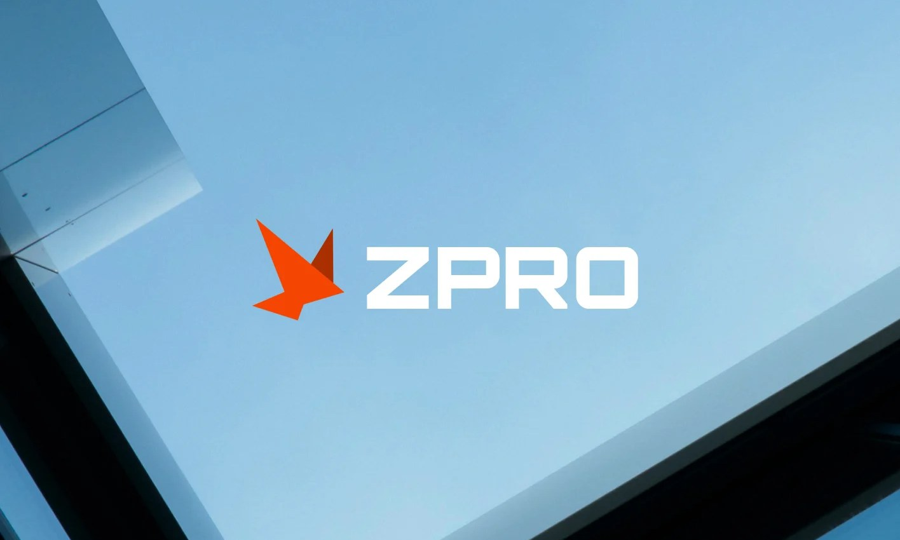
ZPRO, a drone building-cleaning company that needed to look established.
What I Did
ZPRO cleans buildings by drone. Windows, glass and facades on dealerships, hotels and offices. Building managers hire who they trust, so ZPRO needed to look like an established service company, with the drone as the method, not the headline.
The mark is a bird in flight, folded from three sharp triangles. It hints at the drone without drawing one. One orange, one bold wordmark and square corners carry it through the website and everything a building manager sees.
Project Details
Client
ZPRO Building Solutions
Industry
Building services
Services
Identity, Website
Gallery
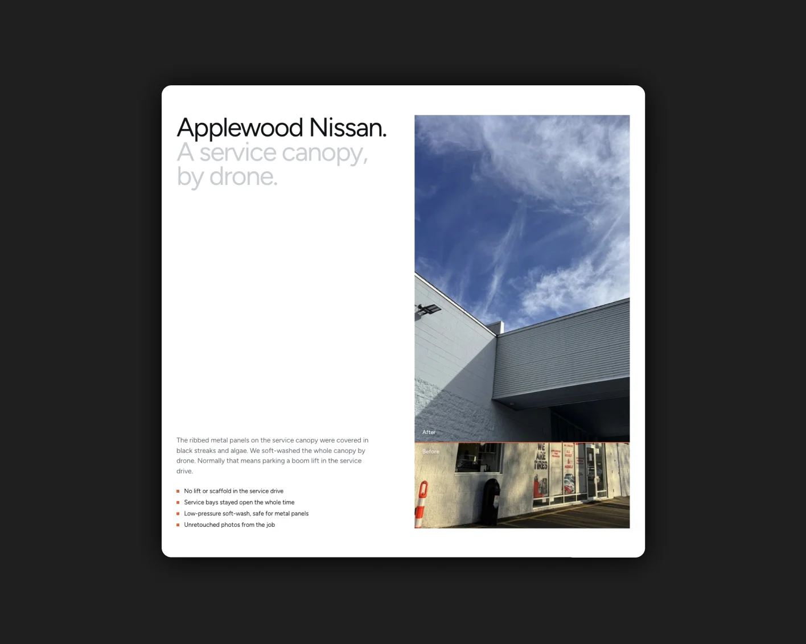
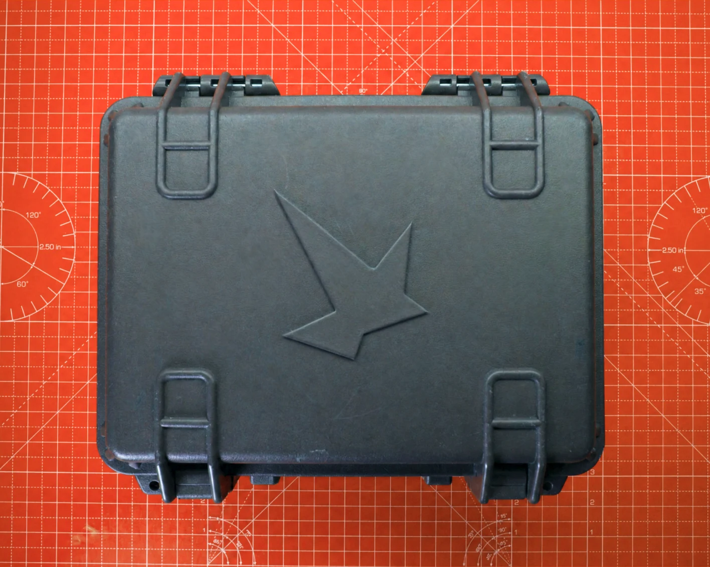
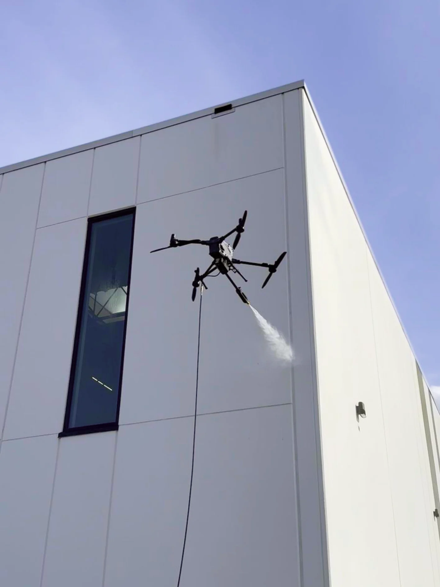
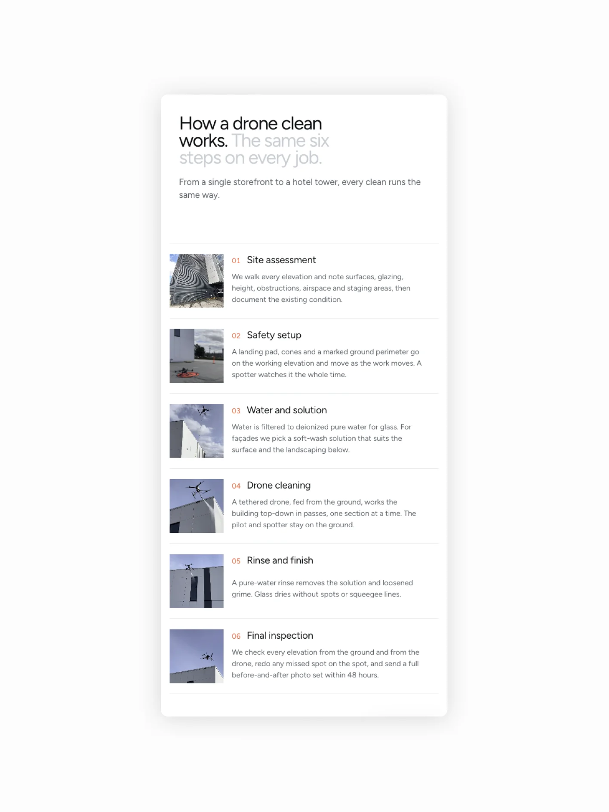
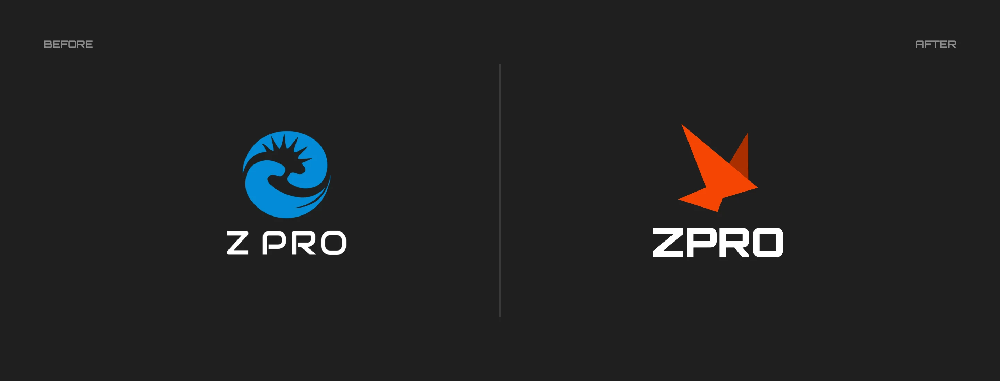
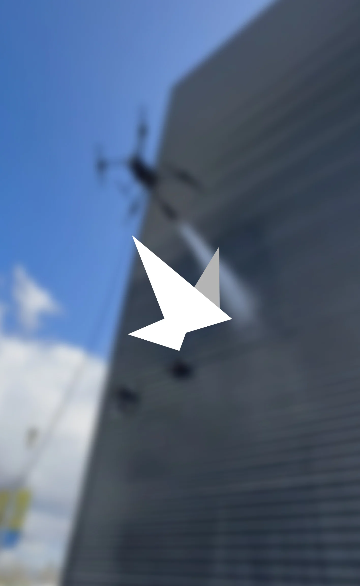
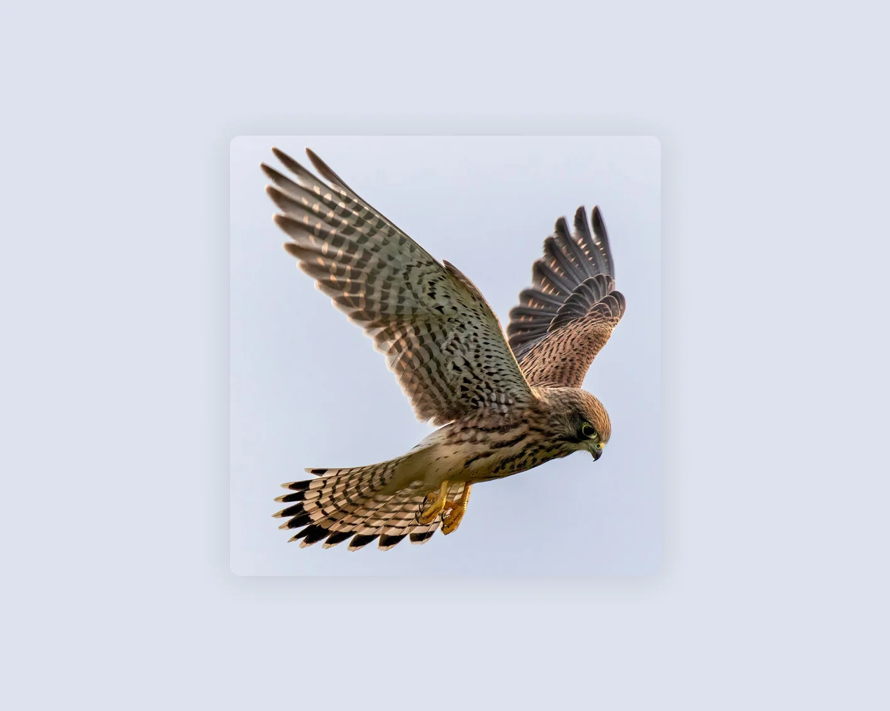
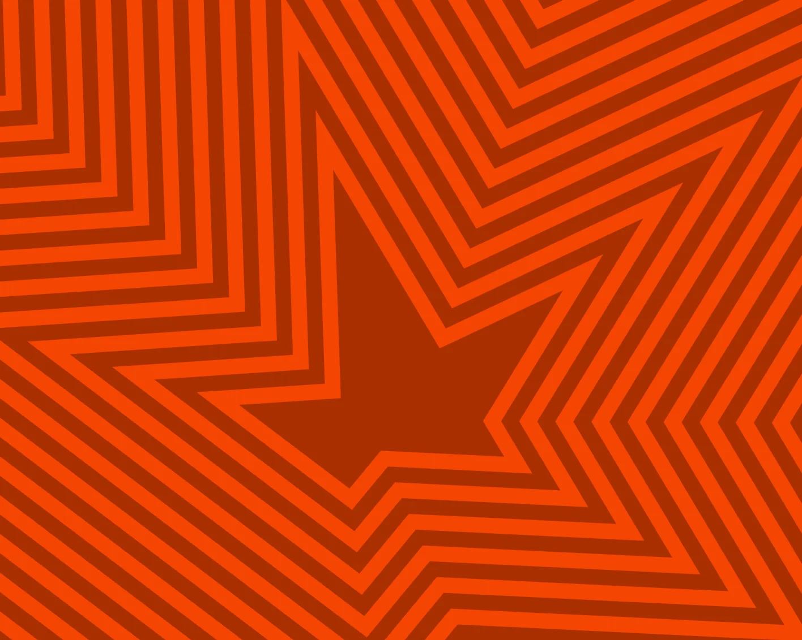
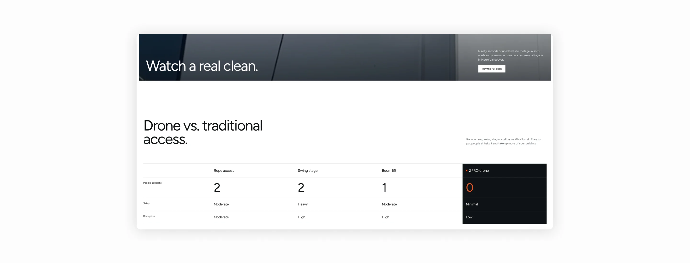
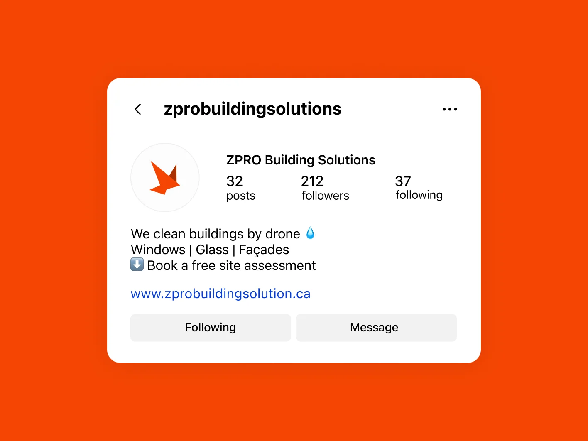
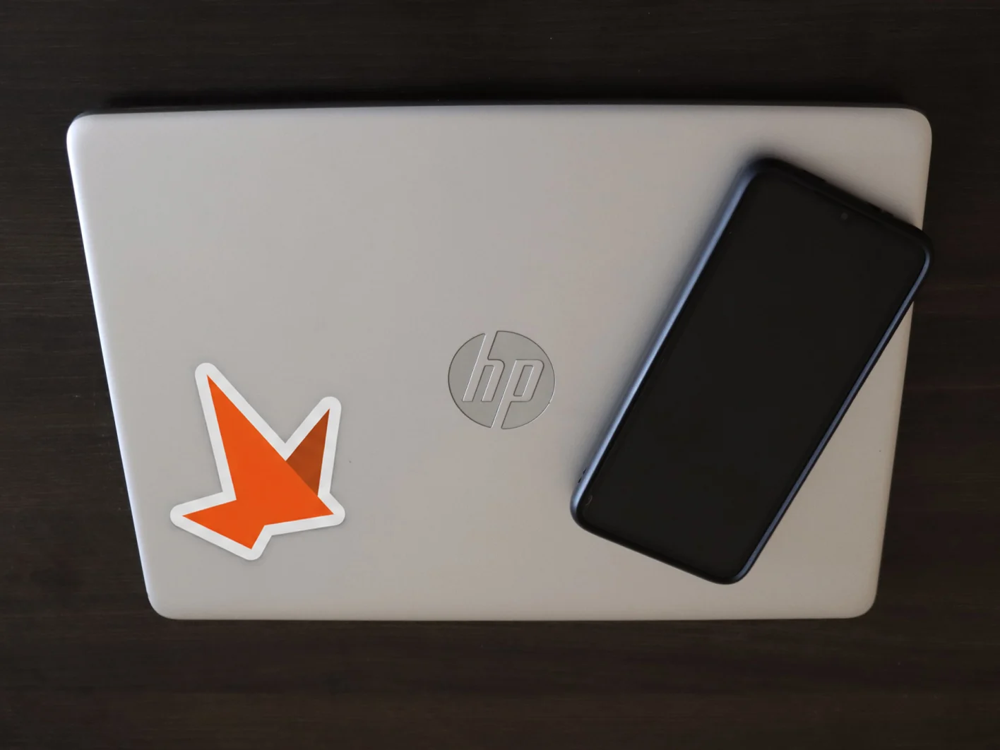